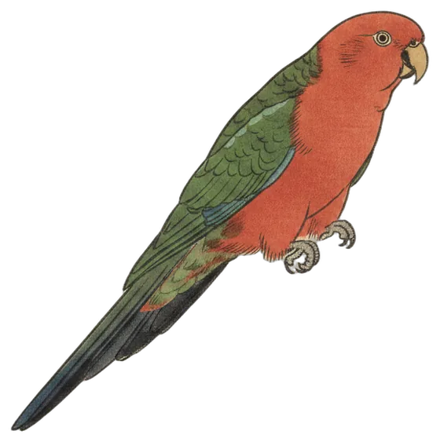

Return
King-parrot heard again after 56 days
A single evening call from an Australian King-Parrot marks its return after 56 days, while the dawn chorus ran from the first light to well past sunrise.

The Australian King-Parrot is back after 56 days unheard. The species was heard once in the 24 hours to 9:30 pm today, a single call at 7:20 pm in the evening dark.
It is only the second day the species has been heard on the station, which has been listening for 64 days. The king-parrot lives in the Canberra region year-round and is one of the most widespread birds around Canberra.
It was among eleven species heard today. The male stands out with a red head and breast, a blue band on the back of the neck, green wings with pale green shoulder bands, and a blue rump.
- Calls
- 1
- First heard
- 7:20 pm
- Best call
- 93%
- Days heard
- 2 of 64